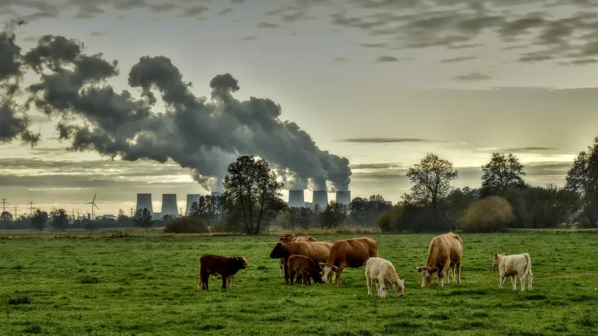

La atmósfera terrestre está compuesta por diferentes gases que tienen como función mantener una temperatura apropiada para la vida. A este fenómeno natural se le llama efecto invernadero. Es necesario que exista equilibrio en la emisión de gases de efecto invernadero para conservar su justa proporción. Sin embargo, las actividades humanas han aumentado la producción de estos gases provocando el llamado calentamiento globa El ser humano es el responsable del cambio climático y sus emisiones de gases de efecto invernadero que calientan el planeta. El gas más conocido es el CO2, causante del 63% del calentamiento global, pero existen otras causas:
La combustión de carbón, petróleo y gas produce dióxido de carbono y óxido nitroso.
La tala de bosques (deforestación).
Los árboles absorben CO2 de la atmósfera y de ese modo ayudan a regular el clima.
Cuando se talan, ese efecto beneficioso se pierde y el carbono almacenado en los árboles se libera en la atmósfera agravando el efecto invern
El desarrollo de la ganadería.
Las vacas y las ovejas producen una gran cantidad de metano durante la digestión.
Los fertilizantes que contienen nitrógeno producen emisiones de óxido nitroso.
Los gases fluorados emitidos por los aparatos y productos que utilizan estos gases.
Estas emisiones tienen un potente efecto de calentamiento, hasta 23 000 veces superior al producido por el CO2.
 Inicio